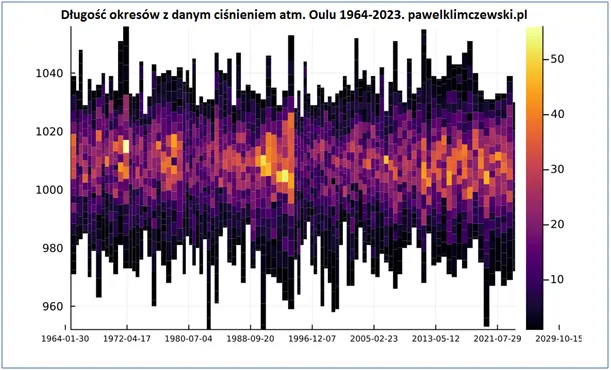
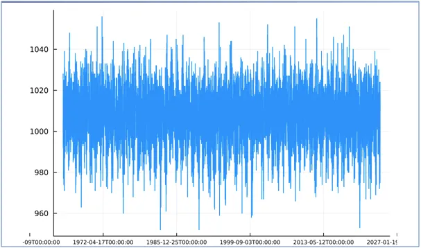

Liczba niszczycielskich niżów spada. Rośnie jedynie liczba fotografii zniszczeń różnych kataklizmów, jakie widzimy z roku na rok dzięki rozwojowi technik transmisji wideo.
Dostałem 6 grudnia od św. Mikołaja pakiet do wizualizacji dużych ilości danych w Julii.
O moim długim romansie z Julią pisałem tu: " SejmGenerator 4.0 czyli „Julia! Kocham Cię!”" https://pawelklimczewski.pl/2023/09/28/sejmgenerator-4-0-czyli-julia-kocham-cie-dzis-juz-na-serio-jak-w-plotku/
Julia to piękna córka najlepszej uczelni na świecie MIT, jest to potężne środowisko programistyczne do robienia wszystkiego bardzo szybko.
Fiński ośrodek naukowy w Oulu nad Bałtykiem mierzy pośrednio promieniowanie kosmiczne, ale też rejestruje od 1964 każdego dnia ciśnienie atmosferyczne. Blisko 60 lat pomiarów to ponad 20 tysięcy dni. Ludzkie oko nie wychwyci subtelności na prostym, drugim wykresie.

Dlatego agreguje się dane w taki sposób, aby obraz przemówił do człowieka. Na pierwszym wykresie widzimy kalendarz 60 lat wstecz, dzielony na okresy pogody o szerokości dostosowanej do ludzkiej percepcji oraz w zależności od tego, czy zmienność pogody była częsta, czy nie.
Jak to czytać? Im krótsze kreski, tym mniejsze skrajne wielkości ciśnienia, im jaśniejszy kolor, tym więcej dni o danym ciśnieniu ze skali po lewej. Widzimy w połowie, ok. roku 1996 częste, ale nieduże zmiany, co obrazują wąskie, krótkie paski. Kilka lat wcześniej grube, żółte pola mówią nam, że bywało w tych okresach nawet po 50 dni (łącznie) z ciśnieniem ponad 1005 hPa, ale w tym czasie pojawiały się też bardzo głębokie niże, poniżej 960 hPa. Czyli de facto pogoda była bardziej zróżnicowana, ale mieliśmy długie okresy niebieskiego nieba.

Obecnie jesteśmy w kolejnym solarnym cyklu podczas wychodzenia z dołka, a coraz większa ilość energii będzie powodować coraz to bardziej dynamiczną pogodę. Pomiar w Finlandii nad Bałtykiem pokazuje te same niże i wyże, które dotyczą Polski. Mimo, że analiza dotyczy najbardziej dynamicznego okresu w historii planety emisji CO2, to nie widzimy tu żadnego trendu tylko pulsowanie zmian wokół 11 letnich cykli słonecznych, a w ostatnim 30-leciu widzimy mniej głębokich, niszczycielskich niżów dających bardzo silne wichury. Rośnie jedynie liczba fotografii zniszczeń różnych kataklizmów, jakie widzimy z roku na rok dzięki rozwojowi technik transmisji wideo.
Paweł Klimczewski